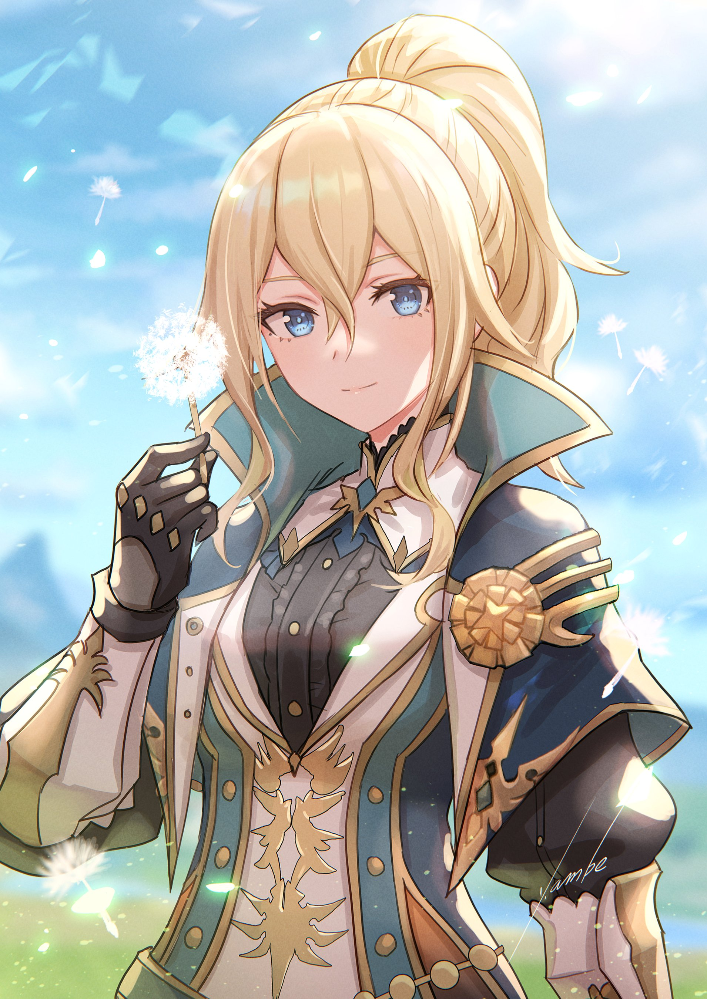

Jean Guide
Jean is a Anemo Sword Character that specializes as a Sub DPS.
Overview
Jean is popular because she is seen as a jack-of-all-trades. She can heal, buff the team, debuff enemies, crowd control, and dish out damage. She can fit into all kinds of roles.

Casting Jean’s Elemental Skill causes the might of the formless wind around her blade, Jean releases a
miniature storm, launching opponents in the direction she aims at, dealing massive Anemo DMG.
Elemental Skill: Gale Blade
Casting Jean’s Elemental Skill causes the might of the formless wind around her blade, Jean releases a
miniature storm, launching opponents in the direction she aims at, dealing massive Anemo DMG.
Hold: At the cost of continued stamina consumption, Jean can command the whirlwind to pull surrounding
opponents and objects towards her front. Direction can be adjusted. Character is immobile during skill duration.
Her bread and butter talent. This is where a majority of Jean’s damage comes from and its fast cast and low cooldown allow her to be quickly swapped in and out dealing quick bursts of damage. The hold variant can be used to drag enemies around. When using the hold variant, enemies can be tossed around. This can allow for instances of fall damage which can deal a significant amount of damage with low investment.
Elemental Burst: Spirit Soother
Calling upon the wind’s protection, Jean creates a swirling Dandelion Field, launching surrounding opponents and dealing Anemo DMG. At the same time, she instantly regenerates a large amount of HP for all party members. The amount of HP restored scales off Jean’s ATK.
Dandelion Field: Continuously regenerates HP of characters within the AoE and continuously imbues them with Anemo. Deals Anemo DMG to opponents entering or exiting the Dandelion Field.
One of the few party-wide burst heals in the game. On top of this the field will constantly swirl elements off of the active character both cleansing elements and elemental debuffs like slowing waters and also creating swirl reactions.
Constellations
C1: Spiraling Tempest
Can be good when doing fall damage set ups with Gale Blade, but not much else.
C2: People’s Aegis
This constellation is a little misleading in its “value.” For most melee characters the ATK Speed increase doesn’t do much for overall damage other than making certain combos easier. The exception is with Raiden as it enables her to do more variations of combos during her elemental burst. However, for ranged units, the extra ATK Speed can feel very strong as they have no hitlag on their attacks, giving them more use out of this Constellation.
C3: When the West Wind Arises
+3 to her Burst. Nice to have.
C4: Lands of Dandelion
Extremely powerful for certain team comps, specifically Xiao. There are very few sources of Anemo Resistance shred in the game, making this a very strong constellation. This amount of resistance shred is equivalent to the 4-piece Viridescent Venerer set
C5: Outbursting Gust
+3 to her Skill. Again, good to have.
C6: Lion’s Fang, Fair Protector of Mondstadt
This constellation damage wise doesn’t do anything, however the added utility from this constellation is extremely strong. When paired with other sources of damage reduction, you can reach 100% damage reduction, taking literally no damage while everything is up. When paired with interruption resistance, this essentially makes you god for 10 seconds.
Teams
Jean is great on many teams, and there are many different ways to play her.
Jean + Xiao + Zhongli
Jean + Mona + Ayaka


Jean + Xingqiu + Beidou
Jean + Raiden + Bennett